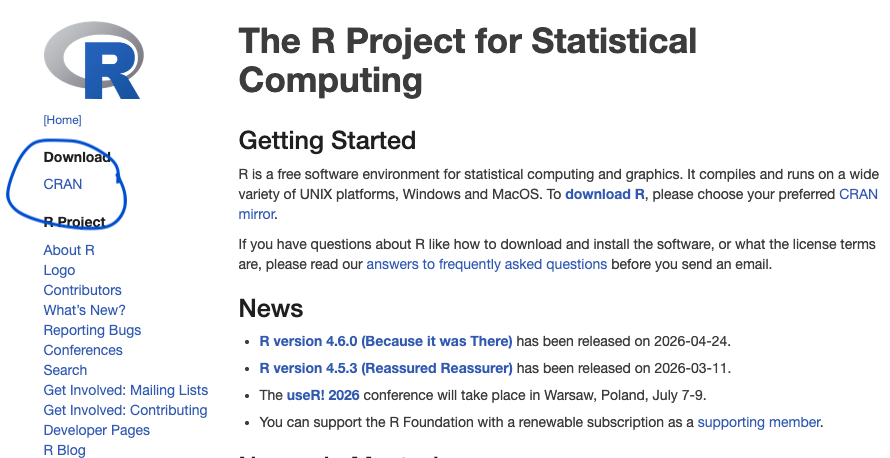
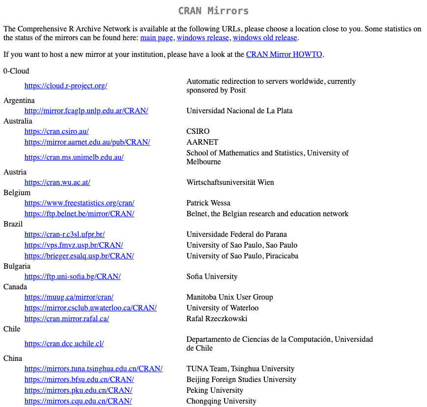
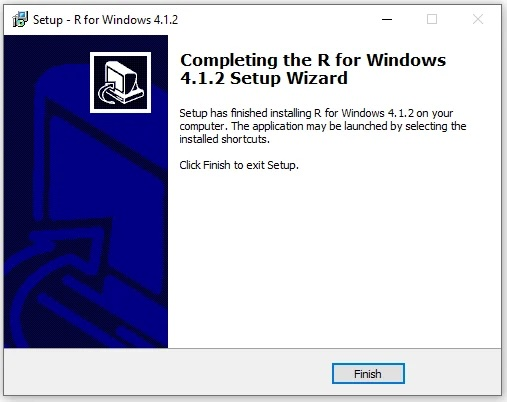
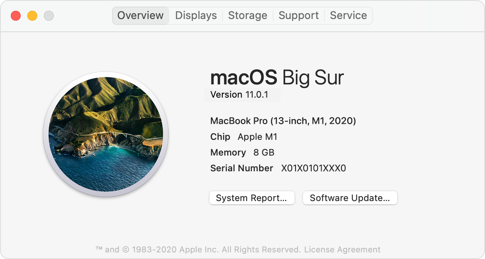
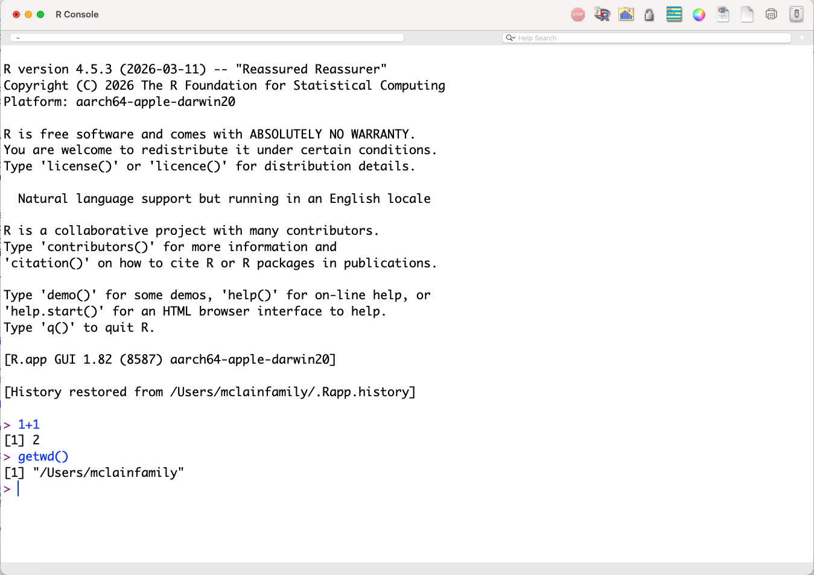
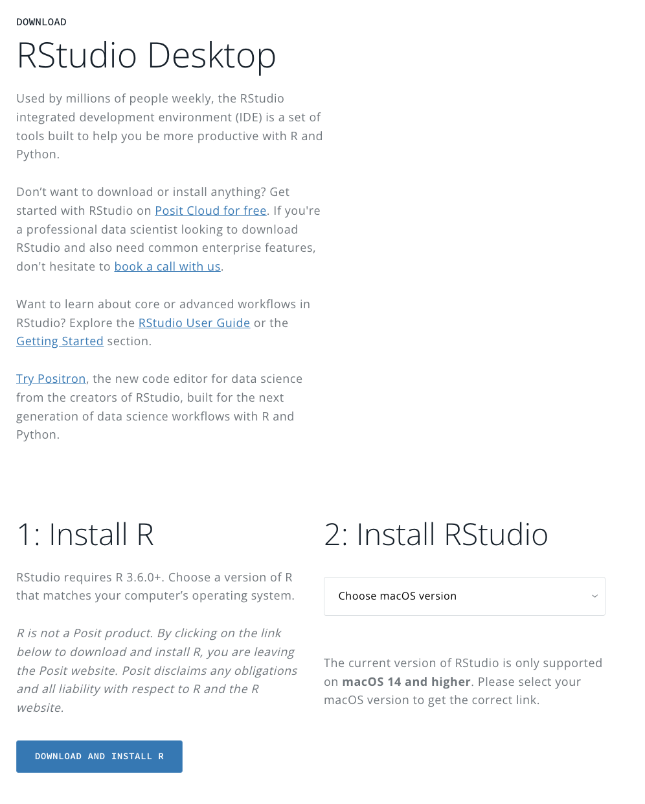
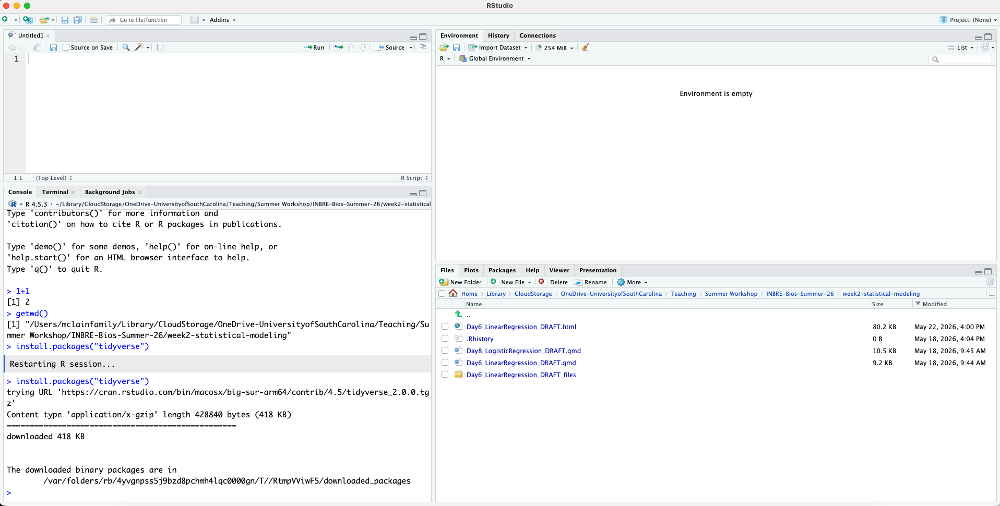
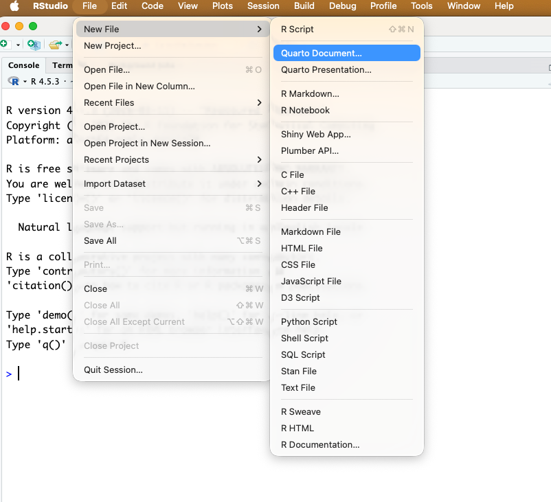
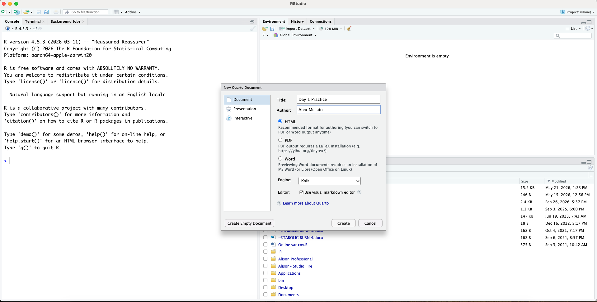

1 / 200 * 30[1] 0.15(59 + 73 + 2) / 3[1] 44.66667sin(pi / 2)[1] 1SC INBRE Biostatistics Summer Intensive 2026
Welcome to the SC INBRE Biostatistics Summer Intensive! This document covers the hands-on material for Day 1. By the end of this session you will be able to:
If you already installed R and RStudio before arriving, jump to Section 3 (Navigating RStudio).
R and RStudio are two separate pieces of software. R must be installed first — RStudio is an interface that sits on top of R and requires it to run.
Step 1. Go to https://www.r-project.org/ and click CRAN under “Download.”

Step 2. Choose a mirror close to you. Any US mirror works; Duke University (Durham, NC) or the Posit mirror are reliable choices.

Step 3 — Windows users:
.exe and follow the installer: accept all defaults, keep the default destination folder, select 64-bit (correct for any modern machine), and click Finish
Step 4 — Mac users:
arm64 build. If it says Intel, download the standard build..pkg and click Continue through the prompts until you see “The installation was successful”
Testing your R installation. Open R directly (not RStudio yet) and type:
1 + 1
getwd()You should see [1] 2 and a file path. If so, R is installed correctly.

Step 1. Go to https://posit.co/download/rstudio-desktop/ and click Install RStudio (the free version).

Step 2 — Windows: Double-click the downloaded .exe, click Next through all prompts, keep the default install location, click Finish. To open RStudio: Start → All Programs → RStudio → RStudio.
Step 3 — Mac: Open the downloaded .dmg and drag the RStudio icon into your Applications folder. Open it from Applications or Spotlight search.
Always open RStudio, not bare R. RStudio launches R automatically in the background. You will do all your work inside RStudio from this point forward.
Testing your RStudio installation. Open RStudio and type the following in the Console pane (bottom-left), pressing Enter after each line:
1 + 1
getwd()
install.packages("tidyverse")The last line will take a few minutes. When it finishes without error, you are ready to go.

The Console (bottom-left) is where R runs code. You can type directly there and press Enter to get an immediate result:
2 + 2The console is useful for quick, exploratory calculations. But anything you type there is not saved — if you close RStudio, it is gone.
A script is a plain text file (.R or .qmd) that saves your code so you can run it again, share it, or modify it. Think of the console as a scratch pad and the script as your lab notebook.
To open a new R script: File → New File → R Script (or Ctrl+Shift+N / Cmd+Shift+N).
To run code from a script:
Ctrl+Enter (Windows) or Cmd+Enter (Mac) to run that line and advance to the nextA good habit from day one: Always write your code in a script, not the console. When something works, you will want to find it again. If it only lives in the console, it is gone when you close RStudio.
I use R scripts everyday (the .R type). Whenever I do anything in RStudio it goes into a script. My students are much bigger on creating .qmd files (which we’ll do later). To me, .R scripts are things you use when your playing around, and .qmd files are what you use when you are formally showing something. I’m always playing around.
Open a new script (Ctrl+Shift+N) and type along with the examples below. Run each line with Ctrl+Enter / Cmd+Enter.
1 / 200 * 30[1] 0.15(59 + 73 + 2) / 3[1] 44.66667sin(pi / 2)[1] 1R follows the standard order of operations. Parentheses matter:
1/2 + 3 # returns 3.5[1] 3.51/(2 + 3) # returns 0.2[1] 0.23 * 3^3 # exponent applied first: 81[1] 81(3 * 3)^3 # parentheses change the result: 729[1] 729Save a result by assigning it to an object with <-:
x <- 3 * 4
x[1] 12Keyboard shortcut: Alt + - (Windows) or Option + - (Mac) types <-. Use it — you will write this thousands of times.
Object names must start with a letter and can contain only letters, numbers, _, and .. We use snake_case throughout this course: lowercase words joined by underscores.
my_result # recommended: snake_case
myResult # also common: camelCaseR is case sensitive: x and X are different objects.
Base R comes with a large set of built-in functions for math and statistics. Here are the ones you will use most often:
x <- c(4.2, 7.1, 2.8, 9.3, 5.5, 3.6, 8.0, 6.4)
# Central tendency
mean(x) # arithmetic mean[1] 5.8625median(x) # median[1] 5.95# Spread
var(x) # variance[1] 5.085536sd(x) # standard deviation[1] 2.255113range(x) # min and max as a vector[1] 2.8 9.3diff(range(x)) # range as a single number (max - min)[1] 6.5IQR(x) # interquartile range[1] 3.275# Sum and cumulative functions
sum(x) # sum of all elements[1] 46.9cumsum(x) # cumulative sum[1] 4.2 11.3 14.1 23.4 28.9 32.5 40.5 46.9cumprod(x) # cumulative product[1] 4.2000 29.8200 83.4960 776.5128 4270.8204 15374.9534
[7] 122999.6275 787197.6161# Order and rank
sort(x) # sort in ascending order[1] 2.8 3.6 4.2 5.5 6.4 7.1 8.0 9.3sort(x, decreasing = TRUE) # descending[1] 9.3 8.0 7.1 6.4 5.5 4.2 3.6 2.8order(x) # indices that would sort the vector[1] 3 6 1 5 8 2 7 4rank(x) # rank of each element (average for ties by default)[1] 3 6 1 8 4 2 7 5# Rounding
round(x, digits = 1) # round to 1 decimal place[1] 4.2 7.1 2.8 9.3 5.5 3.6 8.0 6.4floor(x) # round down to nearest integer[1] 4 7 2 9 5 3 8 6ceiling(x) # round up to nearest integer[1] 5 8 3 10 6 4 8 7abs(c(-3, 1, -5, 2)) # absolute value[1] 3 1 5 2# Common math
sqrt(x) # square root[1] 2.049390 2.664583 1.673320 3.049590 2.345208 1.897367 2.828427 2.529822log(x) # natural log[1] 1.435085 1.960095 1.029619 2.230014 1.704748 1.280934 2.079442 1.856298log10(x) # log base 10[1] 0.6232493 0.8512583 0.4471580 0.9684829 0.7403627 0.5563025 0.9030900
[8] 0.8061800exp(x) # e^x[1] 66.68633 1211.96707 16.44465 10938.01921 244.69193 36.59823
[7] 2980.95799 601.84504A few that are especially useful for summarizing data:
# Counts and extremes
length(x) # number of elements[1] 8min(x) # minimum[1] 2.8max(x) # maximum[1] 9.3which.min(x) # index of the minimum[1] 3which.max(x) # index of the maximum[1] 4# Useful with categorical or logical vectors
table(c("A", "B", "A", "A", "B", "C")) # frequency count
A B C
3 2 1 tabulate(c(1, 2, 1, 3, 2, 1)) # counts by integer value[1] 3 2 1Most of these functions have an na.rm argument. If your vector contains any missing values (NA), the function will return NA by default. Add na.rm = TRUE to ignore them:
x_with_missing <- c(4.2, NA, 2.8, 9.3, NA, 3.6)
mean(x_with_missing) # returns NA[1] NAmean(x_with_missing, na.rm = TRUE) # returns the mean of non-missing values[1] 4.975A vector is a sequence of values of the same type. Create one with c():
primes <- c(2, 3, 5, 7, 11, 13)
primes[1] 2 3 5 7 11 13Arithmetic on a vector applies to every element:
primes * 2[1] 4 6 10 14 22 26primes - 1[1] 1 2 4 6 10 12primes^2[1] 4 9 25 49 121 169Three useful ways to generate sequences:
1:9 # integers 1 through 9[1] 1 2 3 4 5 6 7 8 9seq(from = 0, to = 1, by = 0.25) # by step size[1] 0.00 0.25 0.50 0.75 1.00seq(from = 0, to = 1, length.out = 6) # fixed number of points[1] 0.0 0.2 0.4 0.6 0.8 1.0rep(1:3, times = 3) # repeat the whole sequence[1] 1 2 3 1 2 3 1 2 3rep(1:3, each = 3) # repeat each element[1] 1 1 1 2 2 2 3 3 3A data frame is the most common way to store rectangular data in R — like a spreadsheet. Each column is a vector of the same length.
patient_data <- data.frame(
id = 1:5,
age = c(34, 52, 28, 61, 45),
weight = c(72.1, 88.4, 65.0, 91.2, 78.5)
)
patient_data id age weight
1 1 34 72.1
2 2 52 88.4
3 3 28 65.0
4 4 61 91.2
5 5 45 78.5Access a single column with $:
patient_data$age[1] 34 52 28 61 45mean(patient_data$age)[1] 44Quick summary of the whole data frame:
summary(patient_data) id age weight
Min. :1 Min. :28 Min. :65.00
1st Qu.:2 1st Qu.:34 1st Qu.:72.10
Median :3 Median :45 Median :78.50
Mean :3 Mean :44 Mean :79.04
3rd Qu.:4 3rd Qu.:52 3rd Qu.:88.40
Max. :5 Max. :61 Max. :91.20 Base R is powerful, but most of what we will do in this course uses packages — collections of functions contributed by the R community. There are over 20,000 available.
Install once (downloads to your machine):
install.packages("tidyverse")Load at the start of every session (makes functions available):
library(tidyverse)install.packages() and library() do different things. Installing downloads the package; loading activates it. You only install once, but you load every session.
Also: use straight quotes ("tidyverse"), not curly/smart quotes. Smart quotes will cause an error.
tidyverse loads several packages at once:
| Package | Purpose |
|---|---|
ggplot2 |
Data visualization |
dplyr |
Data manipulation |
tidyr |
Reshaping data |
readr |
Reading/writing files |
stringr |
Working with text |
forcats |
Working with categorical variables |
We will use all of these throughout the course.
A Quarto document (.qmd) combines prose and R code in a single file. When you render it, R runs all the code and produces a polished HTML, PDF, or Word document with your text, code, and output together.
This is the foundation of reproducible research: your analysis and your write-up live in the same place, and results update automatically if your data or code changes.
R Markdown (.Rmd) vs. Quarto (.qmd): Quarto is the successor to R Markdown. The syntax is nearly identical. If you have seen .Rmd files before, everything you know transfers directly. We use .qmd in this course.
1. YAML header — at the very top, between --- lines. Controls title, format, and options:
---
title: "My Analysis"
format: html
---2. Prose written in Markdown:
# Heading 1
## Heading 2
Regular paragraph text.
**bold** *italic* `inline code`
- bullet item
- another item3. Code chunks — R code between triple backticks:
```{r}
1 + 1
mean(c(4, 7, 2))
```Step 1. File → New File → Quarto Document. Give it a title, keep HTML selected, click Create.


Step 2. Click Render in the editor toolbar (or Ctrl+Shift+K / Cmd+Shift+K). The output opens in your browser or the Viewer pane.
Step 3. Try making a change — edit the title, add a line of prose, change a number in a code chunk — then render again.
On our GitHub (https://github.com/alexmclain/INBRE-Bios-Summer-26) page under week1-foundations/day01-orientation the file day1_practice.qmd should look like what you just created. If you want to see a more complicated example of what Quarto can do, see Day1_R_Foundations_1.qmd (which is this document). It gives you all the code to create everything in this document.
Control how each chunk behaves with options inside #| comments:
2 + 2[1] 4| Option | Default | Effect |
|---|---|---|
echo |
true |
Show the code in the rendered output |
eval |
true |
Actually run the code |
warning |
true |
Show/hide R warnings |
message |
true |
Show/hide messages (e.g., from library()) |
Embed R results directly in prose:
The average age is 44 years.This renders as a real number in the document and updates automatically if the data changes.
Write your answers in a new .qmd document and render it when you are done.
Create a vector called temperatures with the values 98.6, 99.1, 97.8, 100.4, 98.2. Compute its mean, standard deviation (sd()), and range.
Create a data frame called my_study with three columns: subject_id (1 through 6), treatment ("A" or "B", alternating), and response (any six numbers). Print it and run summary() on it.
What happens when you type a name that doesn’t exist, like zebra? Try it in the console and write down what the error message says.
In your document, write a sentence using inline code that reports the mean of your temperatures vector. Render and confirm the number appears correctly in the output.
Add echo: false to one of your code chunks. Render again. What changes? What stays the same? When might this option be useful?
5.4 Comments
R ignores everything after
#on a line. Use comments freely:Best practice: Comment the why, not just the what. You can always figure out what
mean(x)does. Six months from now you may not remember why you were computing it on that particular variable.